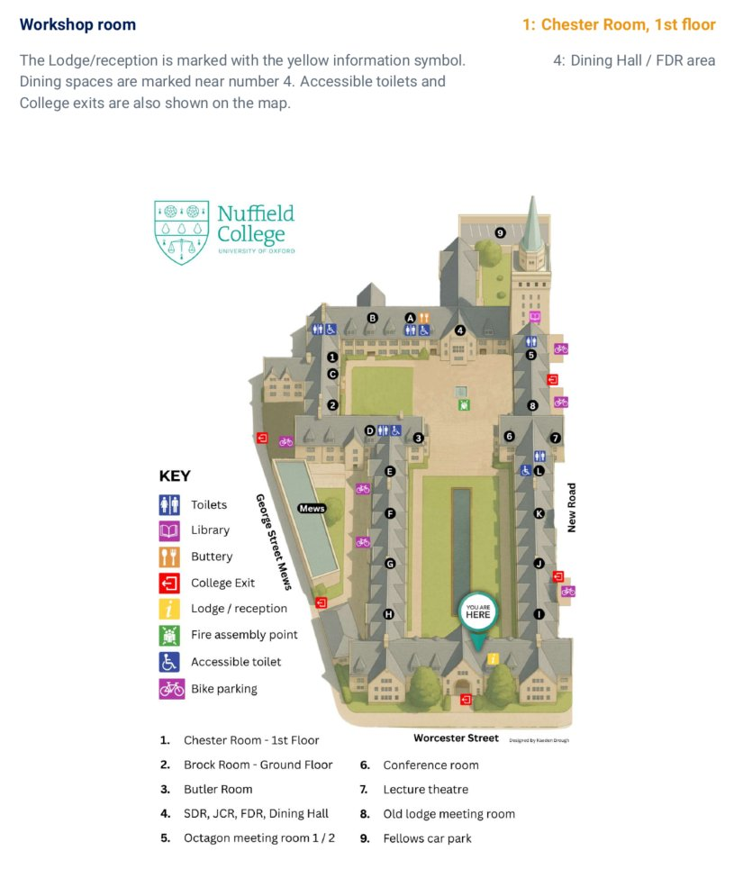
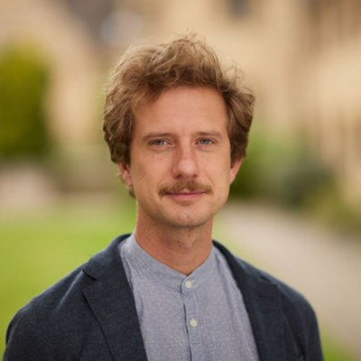

Workshop · Nuffield College, Oxford
Taking Stock and Charting New Directions
About the workshop
This workshop brings together researchers in demography, sociology, economics, and social policy to take stock of what we know about gender, family, and work inequalities — and to chart new directions. Across two days at Nuffield College, fourteen presentations span parenthood penalties, care and mobility, household resources, family diversity, and work–life trajectories across cohorts and national contexts.
Programme
All sessions take place in the Chester Room, Staircase C. Meals are in the Fellows’ Dining Room unless otherwise noted. Select Read abstract under a talk to expand it; speaker names link to personal or institutional pages where available.
A prominent question in recent years has been whether the size of the motherhood wage penalty differs between more and less advantaged women. Most theories stipulate that the penalty should be large at the top of the wage distribution and small at the bottom. Research on the U.S has found the opposite: women at the lower end are punished more for motherhood than those at the higher end. Using population register data from 2016 to 2020, we shift focus to Norway and Sweden, two countries with long and well-paid family leaves, subsidized and high-quality childcare. Our findings show that motherhood wage penalties are particularly pronounced at the lower end of the wage distribution (but smaller than what was reported in the US), and in Sweden even a premium at the upper end. Overall, the results challenge the welfare state paradox, suggesting that rather than inhibiting mothers’ opportunities in top-wage positions, even extensive welfare state interventions fail to fully support mothers with lower wages.
Despite decades of progress in education and labor market participation, gender inequality remains a defining feature of advanced economies. This lecture argues that the persistence of these gaps cannot be understood through standard models of human capital or early childcare constraints alone.
I introduce a new framework centered on on-call parental time—the continuous, often invisible responsibility of being available to children. Using large-scale time-use data and quasi-experimental methods, I show that these constraints extend well beyond early childhood and account for a substantial share of the motherhood penalty in labor supply.
The analysis challenges conventional policy solutions focused on childcare provision and highlights the need to rethink the organization of work, the substitutability of labor, and the role of social norms. The lecture concludes by outlining a research and policy agenda aimed at addressing the deeper structural forces sustaining gender inequality.
Mental health risks around the transition to parenthood are increasingly recognized but poorly mapped across social groups. Using population-wide Dutch administrative registries linked to prescription and mental-health claims data (2006–2021), we estimate motherhood and fatherhood penalties in antidepressant use and mental-health consultation costs with event-study models tracking parents for five years after first birth. We document strong positive selection into parenthood on prior mental health, sizable penalties for both parents that grow over time, and substantial stratification by employment status, earnings, education, immigrant background, and partnership status. We further quantify the share of population-wide mental-health burden attributable to parenthood.
Previous research has shown women commute shorter distances and earn lower wages in return. Shorter commuting distances are assumed to affect wages by preventing women from moving into better paid jobs, however this mechanism has not been tested. In this study, we examine whether wage enhancing employer mobility is linked to localized job opportunities, and how this relationship varies by gender and parenthood status using linked longitudinal administrative and survey data from the UK. We find clear evidence that this is the case for men but only limited support in the case of women.
This presentation summarises findings from two Office for National Statistics (ONS) analyses examining the economic cost of motherhood and adverse pregnancy events in England between April 2014 and December 2022. Using ONS's unique administrative data holdings and fixed-effects regression models, the studies estimated changes in monthly employee earnings and employment probabilities relative to pre-event baselines. The evidence identified a pronounced and persistent impact on mothers: following a first birth, average monthly pay was 42% lower five years post-birth compared with one year prior, equating to cumulative losses of approximately £65,618. This effect is partly mediated by reduced employment participation, with the probability of paid employment declining by up to 15 percentage points and remaining below pre-birth levels long-term. Adverse pregnancy events — including miscarriage, ectopic pregnancy, stillbirth, and neonatal death — were also associated with measurable earnings penalties, persisting for up to five years and ranging from approximately £2,000 after ectopic pregnancy to over £13,000 following stillbirth. Although employment probabilities typically recover within one to two years, short-term declines were evident across all event types. Overall, the findings highlight the sustained economic consequences of reproductive events, which could inform targeted policy making and spending decisions.
How couples manage their money can give important insights into gender inequalities within the household. Using panel data for the United Kingdom from 2009/10-2019/20, we analyse how family structure and women’s financial independence affect the management of household finances among couples with children, among whom gender earnings gaps are large. We show that finances are less likely to be shared in non-traditional households, including those where there are stepchildren, or where women contribute a higher share of family income. Linking information on how couples manage their money to individuals’ perceptions of financial stress and psychological well-being we further show that, when finances are not shared, women are more likely to face financial stress and have poor mental health. We conclude by discussing the implications for the design of tax and benefit systems.
Partner resemblance for a given characteristic, also known as homogamy, bears important implications for societies. Still, research into the extent and determinants of homogamy in wealth is scarce. Using representative household surveys from Britain and Germany, we estimate associations between different-sex partners’ wealth covering their first eight years of cohabitation and beyond. We do so to distinguish between mechanisms operating at the beginning vis-à-vis later partnership stages, given that their relative importance may differ across contexts. In both countries, we find positive and substantive associations in partners’ personal net wealth. Wealth homogamy during early partnership stages can be attributed to assortative mating on current and expected future wealth. Wealth homogamy at later partnership stages is further driven by the pooling of resources through joint homeownership in Germany, but not in Britain. In Britain, we observe growing resemblance in partners’ saving and investment behavior. However, we do not find evidence for selective partnership continuation on similarity in wealth in both countries. Thus, mechanisms that operate over the course of the partnership appear critical for wealth homogamy in modern societies.
: Research on family wage gaps documents male marital premiums and motherhood penalties, but typically treats them as static individual-level events rather than as processes that reorganize household stratification. This article reconceptualizes first family formation as transitions that bind partners’ earnings trajectories, shaped by welfare-state and labor-market contexts. Drawing on roughly two decades of harmonized panel data from six countries (United States, United Kingdom, Australia, Switzerland, Germany, and South Korea), this study employs event-study models with couple- and individual-level fixed effects. I trace changes in women’s share of couple earnings, individual earnings, and pre- and post-tax household income around first marriage and first childbirth. Findings reveal that across all countries, women’s share of couple earnings declines sharply and persistently following the transition to parenthood. However, the translation of this growing within-couple divergence to household income trajectories varies substantially across contexts. In Europe and Australia, pre-tax incomes fall substantially after childbirth. These income losses are driven primarily by motherhood penalties that are not offset by male premiums. Where buffering occurs, it operates mainly through taxes and transfers rather than labor market returns. In the U.S., accounting for differential pre-birth income growth reveals an otherwise hidden income penalty of approximately 11 percent. In South Korea, female marital earnings penalties complicate narratives of a parenthood income premium. Maternal education attenuates losses primarily in weakly redistributive systems. These findings recast family formation as a central mechanism through which gender inequality is translated into persistent household stratification.
Intergenerational mobility has been shown to vary across groups defined by family-level characteristics such as race, neighbourhood, and parental immigration status. We provide the first population-wide evidence that the relationship between parental background and adult children’s earnings, health, fertility, and family formation is also stratified by sexuality – an individual-level characteristic that varies within families. To do so, we develop a new strategy to identify same-sex and different-sex couples in Danish administrative data using joint financial commitments. Our approach mitigates limitations associated with non-representative surveys and cross-sectional data on sexuality. Drawing on identity economics and minority stress theory, we propose a conceptual framework in which deviation from the social prescription of different-sex attraction generates identity costs that may decline with parental resources through reduced exposure to discrimination and enhanced coping capacity. Empirically, we find that disparities generally persist across the parental income distribution, though severe mental health conditions are particularly elevated among same-sex attracted individuals from low-income families. We explore parent-child relationships as potential mechanisms, finding that same-sex attracted individuals live farther from parents across the income distribution. Results are robust to controlling for unobserved parental heterogeneity through sibling fixed effects, though they vary across childhood regions and cohorts. Our findings suggest that intergenerational mobility varies not only with factors shared by siblings but also with individual-level characteristics, such as sexuality.
Existing theoretical perspectives in family demography argue that socioeconomic barriers and challenges in combining work and family shape inequalities in access to parenthood. In this paper, we propose a perspective that argues that inequalities in access to parenthood can arise when normative family forms, when assumed to be the default, are encoded in public policies. We argue that in today’s individualized societies, the extent to which policies support diverse family forms and shift beyond these normative defaults is an important determinant of who becomes a parent. We provide empirical evidence for this by studying the case of policies regulating assisted reproductive technologies (ART) in Spain. We examine a reform that excluded women in same-sex couples from accessing ART through the public health system. Using data from the Spanish census and large household surveys, we show that this reform substantially reduced parenthood among women in same-sex couples. In regions where public access to assisted reproduction was later restored, parenthood levels among women in same-sex couples recovered. By contrast, parenthood remained low in regions where access continued to be restricted. These findings provide a clear example of how the mismatch between pluralizing family aspirations, and public policies that encode normative defaults, can significantly shape inequalities in access parenthood in contemporary populations.
Research on work-family trajectories has blossomed in the recent past, supported by the development of sequence analysis methods to analyse complex life course trajectories. These holistic analyses are grounded in a realist assumption that the sequence analysis techniques can uncover genuine and meaningful longitudinal patterns that can be used to describe their prevalence across populations and that can be further used as dependent or independent variables in regression analyses. We review published work-family sequence analyses (with a focus on research on the Germany, the UK and the US) and ask to what extent the studies reproduce a) the number of work-family trajectories, b) the main types of trajectories, and c) the prevalence of these trajectories, in particular in comparable populations defined by country and cohort. We find substantial variation in the reproducibility of the trajectories and their prevalence and discuss the implication of this finding for analyses of work-family life patterns.
This study examines long-term changes in the gender division of paid and unpaid work across East Asian and Western societies from the 1980s to the 2020s. Using harmonized time diary data from national time-use surveys and the Multinational Time Use Study (MTUS), we analyze trends in women’s and men’s daily minutes spent on paid work and unpaid domestidc work. The dataset includes surveys from Japan, South Korea, Taiwan, Canada, Finland, Italy, the Netherlands, the United Kingdom, and the United States, yielding a final analytical sample of 877,232 individuals aged 20–65.
To disentangle life-course and historical dynamics, we apply Age–Period–Cohort (APC) models using the Intrinsic Estimator method. The analysis distinguishes age effects, period effects, and cohort effects across eight age groups, eight historical periods, and fifteen birth cohorts, while controlling for educational attainment.
Findings reveal a nonlinear and context-dependent trajectory toward greater gender equality in time allocation. Although a general period trend toward convergence in paid and unpaid work is observable, the pace and sustainability of change vary markedly across countries and welfare regimes. Anglo-Nordic countries show sustained reductions in gender gaps, whereas Japan and South Korea exhibit persistent inequalities across cohorts. Cohort replacement contributes to convergence primarily in contexts with stronger institutional support for dual-earner families. Life-course patterns also differ cross-nationally: inequalities attenuate after midlife in liberal and social-democratic welfare states but remain elevated in East Asian societies. Across countries, highly educated women are the primary drivers of change toward more egalitarian time use, highlighting the importance of educational and institutional contexts in shaping gender equality in work time.
Research has documented widespread mismatches between the amount of hours employees work and the amount they prefer to work. These mismatches are linked to reduced job and life satisfaction, work-family conflict, and broader patterns of gender inequality. Yet the dynamics of hours mismatches across the life course remain poorly understood, particularly regarding family transitions, which are key moments when people reconsider their work-family balance and face shifting time constraints and economic needs. This paper investigates how actual and preferred working hours change around major family transitions in the Netherlands, and how these changes relate to the emergence and resolution of hours mismatches. We combine data from the Dutch Labor Force Survey with population registers providing information on union formation and dissolution, childbirth, and children starting school. Using an event-study design, we trace the evolution of actual hours, preferred hours, and mismatches from three years before to three years after each type of transition. We also investigate variation by gender and class, as these can be important dimensions along which the hours mismatches differ. Our analysis addresses several theoretical questions. By examining transitions that increase versus decrease parental demands, we test predictions from role conflict theory; by tracking the persistence or resolution of mismatches, we evaluate claims about labor market efficiency versus structural barriers that make it difficult for people to get the hours they want. Furthermore, comparing patterns across transitions can shed light into the mechanisms generating mismatches at different life stages. The paper contributes more broadly to understanding how individual work strategies adapt to changing family circumstances, as well as how individual and institutional factors shape the alignment between preferences and behavior across the life course.
Venue & travel
+44 (0)1865 278500 · nuffield.ox.ac.uk
Enter via the Porters’ Lodge on Worcester Street (marked with the yellow information symbol on the College map). The workshop room is the Chester Room, Staircase C, first floor. On arrival, report to the Lodge and follow signs to Staircase C.
Nuffield College on Google Maps →
College map designed by Kaeden Brough.
Accommodation
Please check the check-in times for your venue carefully. If there is any risk of late arrival — especially for Nuffield College rooms — contact the organizers as soon as possible so we can arrange your keys.
11 Mansfield Road, Oxford OX1 3SZ · +44 (0)1865 271044
Nuffield College, Oxford OX1 1NF
Attend online
Sessions are open to pre-registered participants only over a locked Microsoft Teams webinar. Presentations are shown in hybrid format to registered attendees with the speakers’ consent. To receive the join link, register by email in advance.
Email us to request the Teams link. We confirm each registration before the workshop and send the link to approved attendees only. Please register at least 48 hours in advance.
Register by email →Organizers
Postdoctoral Prize Research Fellow in Sociology, Nuffield College · LCDS
Works on social stratification, gender inequalities in cross-national perspective, policy analysis, and inequality measurement.

Research Fellow, Leverhulme Centre for Demographic Science, University of Oxford
Works on labour-market demography, maternal employment trajectories, occupational segregation, and metascience.
Acknowledgements
This workshop is supported by Nuffield College’s Group Chairs’ Committee Grant and the Leverhulme Research Centres Grant for the Leverhulme Centre for Demographic Science.
Group Chairs’ Committee Grant (GC26-1) · Leverhulme Research Centres Grant (RC-2018-003)